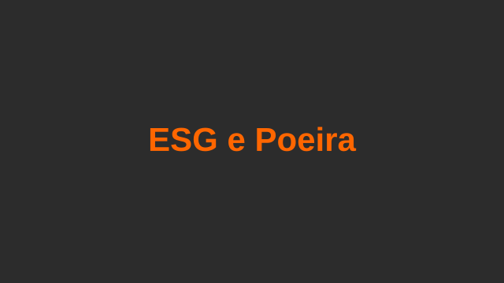
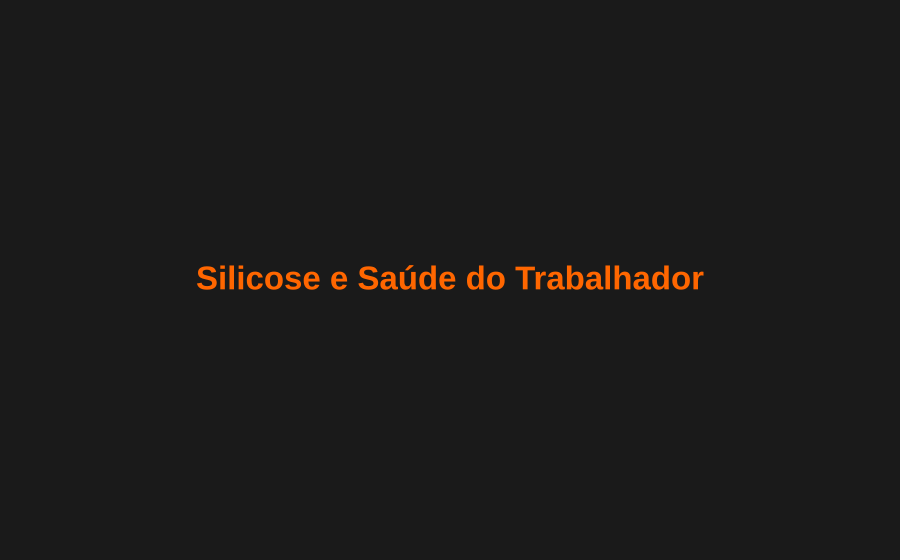
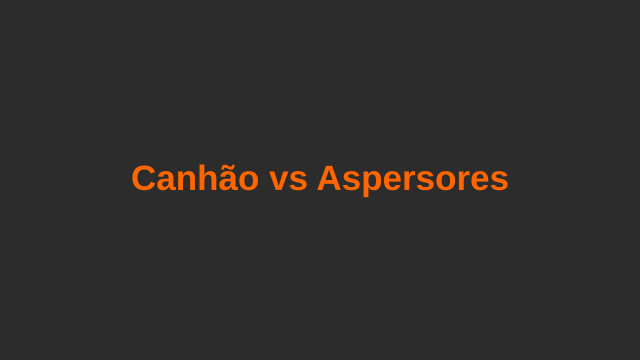
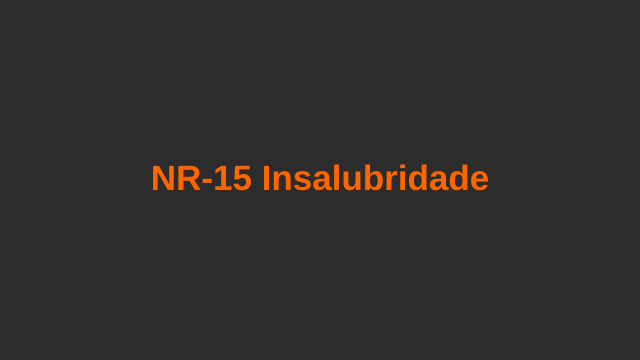
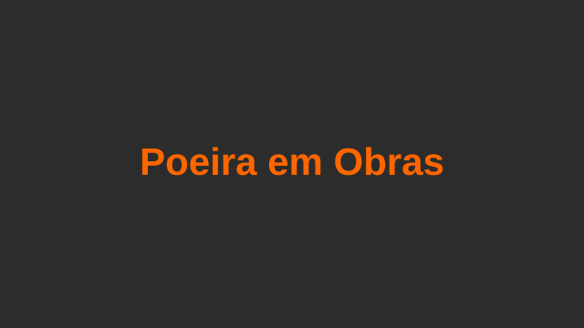
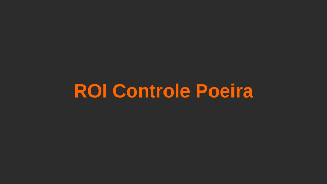
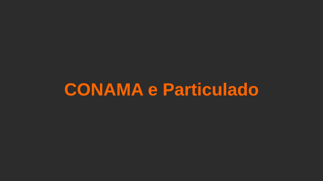
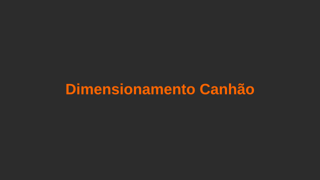
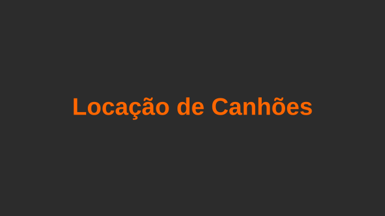

ESG na prática: como o controle de poeira impacta sua certificação
O controle de particulado está no centro de qualquer estratégia ESG para indústrias pesadas. Como documentar, medir e evidenciar resultados para investidores.
Legislação, normas, ESG e tecnologia para quem decide sobre controle de poeira industrial.

Saúde e Segurança
A silicose é a principal doença ocupacional relacionada a poeira no Brasil. Irreversível e incapacitante, ela pode ser completamente prevenida com controle adequado de particulado. Entenda os riscos, as normas aplicáveis e a solução.

O controle de particulado está no centro de qualquer estratégia ESG para indústrias pesadas. Como documentar, medir e evidenciar resultados para investidores.

Análise técnica comparando os dois sistemas mais utilizados para controle de poeira. Alcance, eficiência, consumo de água e custo total de propriedade.

A NR-15 (Atividades e Operações Insalubres) estabelece limites de tolerância para agentes físicos, incluindo poeira. Saiba o que muda com as atualizações recentes.

Construtoras em áreas urbanas enfrentam crescente pressão ambiental e de vizinhos. Entenda os riscos legais e como o controle de poeira evita embargos.

Multas, passivos trabalhistas, custos de manutenção e impacto na produtividade. Metodologia para calcular o retorno real de um sistema de supressão de poeira.

A Resolução CONAMA 03/90 estabelece padrões primários e secundários de qualidade do ar. Entenda os limites, como são medidos e o que fazer para estar em conformidade.

Área, intensidade da poeira, condições de vento e ponto de aplicação. Os fatores que determinam qual modelo e quantas unidades são necessários.

Projetos de curto prazo, obras emergenciais ou operações sazonais podem se beneficiar da locação. Entenda quando vale comprar e quando faz mais sentido alugar.